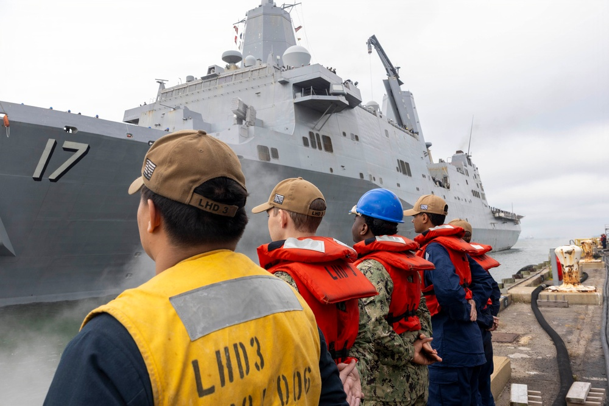

USS San Antonio returned to Norfolk after a 4th Fleet deployment that included Venezuela relief
Naval Surface Force Atlantic said the amphibious transport dock USS San Antonio (LPD 17) returned to Naval Station Norfolk on Oct. 13, closing a deployment that began June 29. Capt. Matt Gleason, the commanding officer, said the crew had been out on two deployments across a little more than fourteen months, and that Capt. Tom Uhl led the ship through most of that stretch. The release said the ship served as the afloat command center for Southern Command disaster relief after two earthquakes in Venezuela, delivered two air-cushion landing craft loads of aid at La Guaira, and became the first amphibious transport dock since 2018 to transit the Panama Canal. In the Eastern Pacific the crew ran interdiction under Joint Task Force Western Hemisphere and transferred detained people to the Ecuadorian Coast Guard. The official still shows sailors at parade rest as the ship returns.